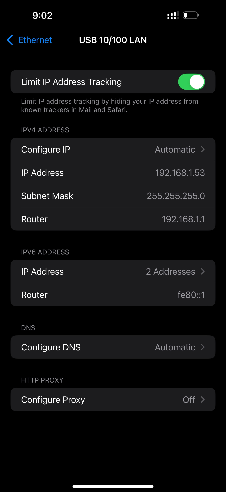
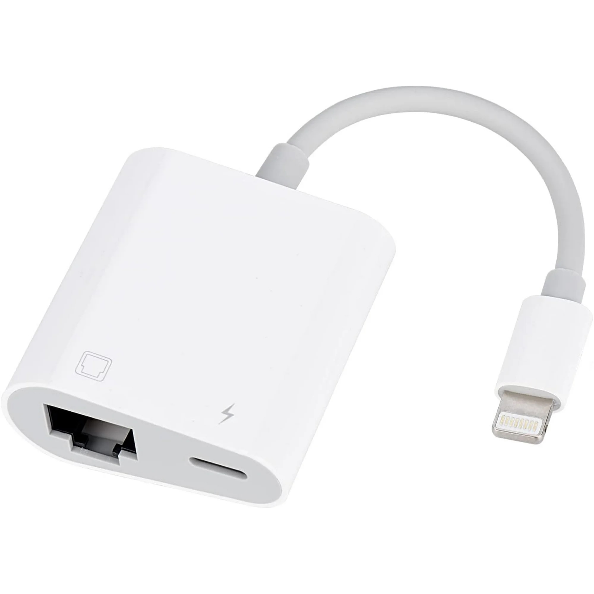
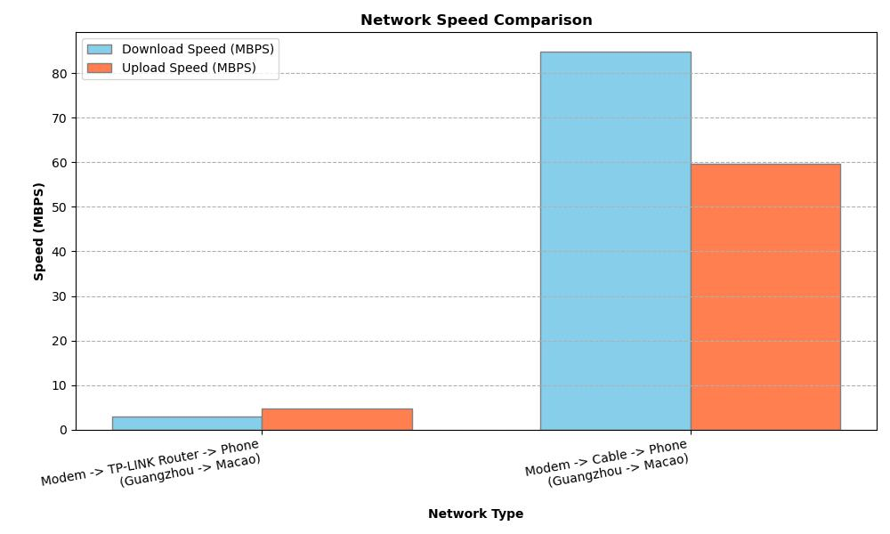

雷电到以太网转接器 | 原创，AI翻译
我最近试用了一款之前从未使用过的新产品，它在京东上花了我大约 44 元人民币。类似的产品在沃尔玛网站上大约是 15 美元。
它运行得非常好，不需要额外的设置。插入适配器后会显示一个“以太网”菜单项。
我使用了 Speedtest iOS 应用程序来测试速度。结果如下所示。
| 网络类型 | 距离 | 下载速度 (MBPS) | 上传速度 (MBPS) | 线路 |
|---|---|---|---|---|
| 调制解调器 -> TP-LINK 路由器 -> 手机 | 约 30m | 2.90 | 4.82 | 广州 -> 澳门 |
| 调制解调器 -> 电缆 -> 手机 | 约 30m | 84.9 | 59.7 | 广州 -> 澳门 |
在一次测试中，响应性的 ping (ms) 结果如下所示：
| 量度 | 值 | 抖动 |
|---|---|---|
| 空闲 | 33 | 68 |
| 下载 | 1885 | 110 |
| 上传 | 127 | 54 |
这是一个稍显天真的测试。我怀疑速度差异的一个原因是从调制解调器到 TP-LINK 路由器的连接大约是 20 米，从 TP-LINK 路由器到手机的连接大约是 10 米。此外，TP-LINK 路由器使用无线桥接连接调制解调器。
Speedtest 是一个有用的工具。如果你使用阿里云的服务器并将带宽设置为 5Mbps，那么使用应用程序测试它会得到大约 5Mbps 的结果。
有趣的是，如果同时连接 Wi-Fi 和以太网，没有办法优先选择其中一个。在这种情况下，只能使用以太网。如果你想使用 Wi-Fi，必须拔下以太网适配器。
 来源: iOS
 来源: Walmart.com
 来源: network_plot.py